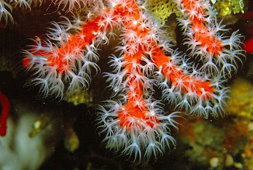

Рассмотрим некоторых представителей этой категории.
Красный коралл.
Обитает на глубине 10—200 метров в Средиземном море (у берегов Италии, Алжира, Туниса, Марокко), Красном море, у берегов Японии, Малайзии, Австралии, в районе Гавайских островов. Образует разветвлённые колонии, прочно прикрепляющиеся к скалистому грунту. Полипы белые, снабжены венчиком из 8 перистых щупалец. Красные кораллы имеют форму маленьких безлистных кустарников и могут вырастать до метра в высоту. Красные кораллы используются для изготовления украшений и в этом качестве ценятся более других видов кораллов. Красные кораллы ценились ещё с античных времён.

Alcyonium digitatum.
Разветвление коралла напоминает по форме кисть руки и достигает в высоту обычно 10, реже 15 сантиметров. Окраска коралла белая, жёлтая, светло-оранжевая или розовая. Для закрепления на грунте в организме имеются небольшие известняковые иголки, так называемые склериты. Как почти все кораллы, образует колонию животных, состоящую из множества отдельных полипов. Внутри колонии проходит множество узких, небольших каналов, по которым отдельные особи взаимодействуют друг с другом. Полипы длиной 1 сантиметр имеют восемь щупалец. В отличие от большинства родственных видов из тропических морей, они не живут в симбиозе с зооксантеллами и питаются исключительно планктоном. Поскольку формой и цветом коралл напоминает руку мертвеца, он получил в английском языке название dead man’s finger (аналогичное название в немецком языке Tote Mannshand). Название «пальцы мертвеца» носит также распространённый гриб Xylaria polymorpha.